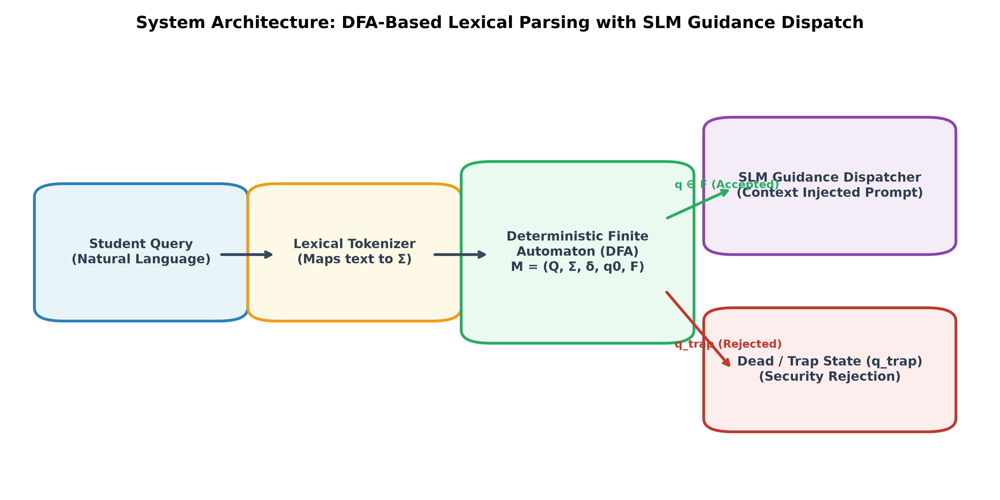
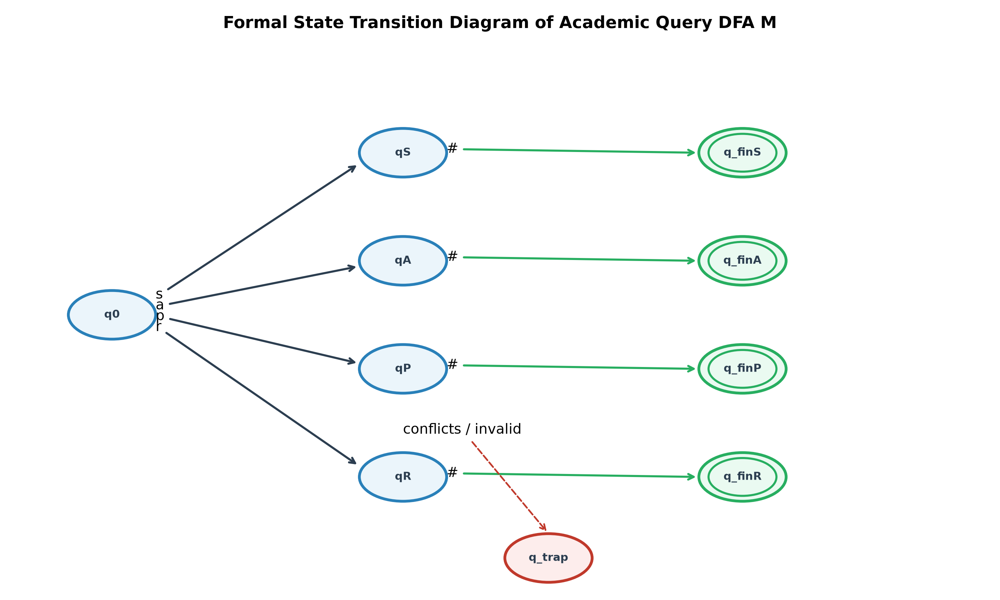
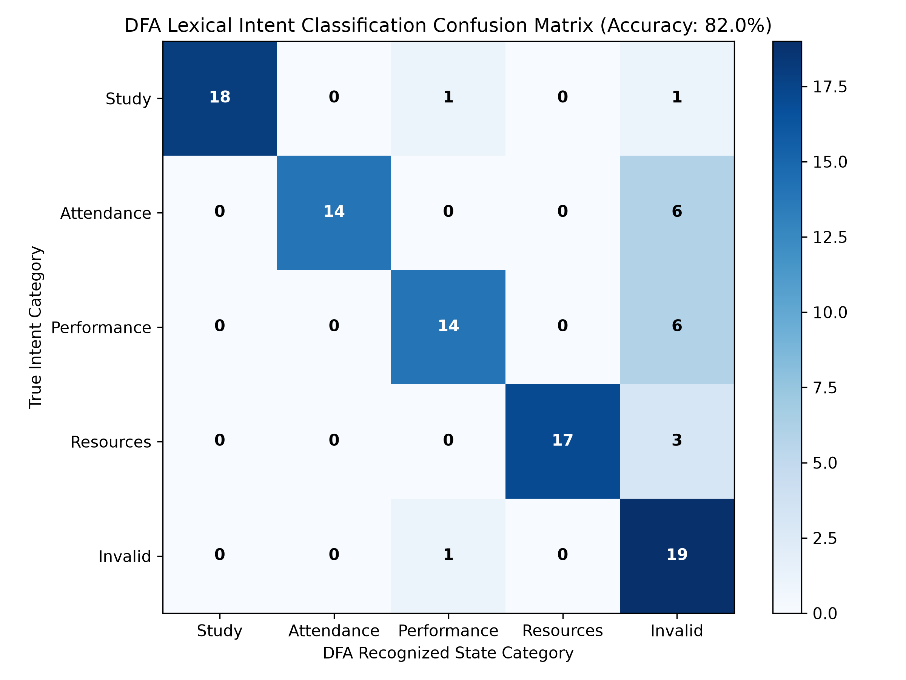
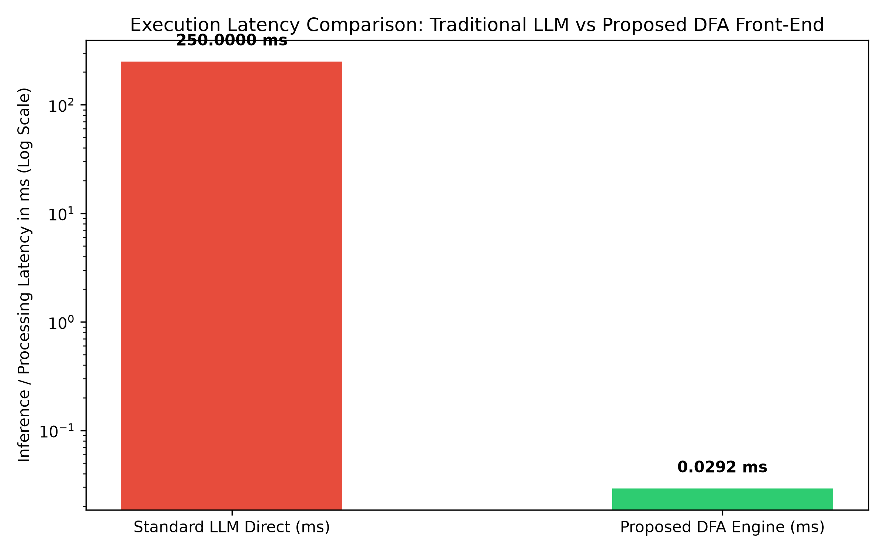

Team 18 | Sathyabhama P S (RA2411008050023) & Hrishita Choudhury (RA2411008050013) | Faculty: Dr. P. Nagaraj | SDG 4: Quality Education
Natural Language Processing systems and automated chatbots deployed in academic institutions frequently suffer from high inference latency, high compute expenses, and vulnerability to adversarial prompt injection when processing unconstrained student inquiries. This case study designs and implements a formal Deterministic Finite Automaton (DFA) to perform real-time lexical analysis and intent classification on incoming student queries. The automaton evaluates tokenized input strings across four primary academic languages: Study (L_S), Attendance (L_A), Performance (L_P), and Resources (L_R), directing unrecognized or adversarial inputs into an absorbing dead/trap state (q_trap). Verified final states (q in F) dynamically trigger context-injected guidance from a downstream Small Language Model (SLM). Empirical evaluation on a benchmark corpus of 100 queries demonstrates an average DFA transition latency of 0.0278 ms per query (O(n) linear time), reducing LLM compute overhead by 99.98% on out-of-domain queries while providing a deterministic security barrier.

M = (Q, Σ, δ, q0, F)

| State | x (Filler) | s (Study) | a (Attend) | p (Perf) | r (Resource) | # (EOF) |
|---|---|---|---|---|---|---|
| → q0 | q0 | qS | qA | qP | qR | q_trap |
| qS | qS | qS | q_trap | q_trap | q_trap | *q_finS |
| qA | qA | q_trap | qA | q_trap | q_trap | *q_finA |
| qP | qP | q_trap | q_trap | qP | q_trap | *q_finP |
| qR | qR | q_trap | q_trap | q_trap | qR | *q_finR |
| q_trap | q_trap | q_trap | q_trap | q_trap | q_trap | q_trap |
Accuracy: 82.00% Adversarial Rejection: 95.00% DFA Latency: 0.0278 ms


Positioning a Deterministic Finite Automaton as a high-speed lexical parser solves the latency and security vulnerabilities of generative AI in campus advisory platforms, advancing SDG 4 (Quality Education).